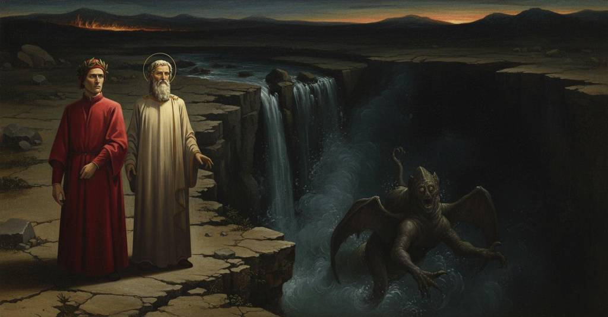

Inferno — Canto 16

Dante converses with three noble Florentine souls about their city's decline before Virgil uses Dante's cord to summon a monstrous figure from the abyss below the waterfall. 三人のフィレンツェの著名な魂と語らった後、ウェルギリウスが語り手の綱を奈落へ投げ込むと、そこから驚くべき怪物が姿を現した。
1
Già era in loco onde s’udia ’l rimbombo
I was already in a place where the rumbling was heard
すでに、とどろきが聞こえる場所にいた
2
de l’acqua che cadea ne l’altro giro,
of the water that was falling into the next circle,
次の圏へと落ちる水の、
3
simile a quel che l’arnie fanno rombo,
like the buzzing that beehives make,
それは蜂の巣が立てる羽音に似ていた、
4
quando tre ombre insieme si partiro,
when three shades together broke away,
その時、三つの影が一緒に離れてきた、
5
correndo, d’una torma che passava
running, from a troop that was passing
走りながら、通り過ぎる一団から
6
sotto la pioggia de l’aspro martiro.
under the rain of the harsh martyrdom.
厳しい苦罰の雨の下を。
7
Venian ver’ noi, e ciascuna gridava:
They came toward us, and each one cried:
我々の方へやって来て、それぞれが叫んだ、
8
«Sòstati tu ch’a l’abito ne sembri
«Stop, you who by your clothes seem to us
「立ち止まれ、そなた、その服装から察するに
9
esser alcun di nostra terra prava».
to be someone from our wicked land».
我らの邪悪な土地の者であるらしいな」。
10
Ahimè, che piaghe vidi ne’ lor membri,
Alas, what wounds I saw upon their limbs,
ああ、私が彼らの四肢に見た傷跡は、
11
ricenti e vecchie, da le fiamme incese!
recent and old, burned by the flames!
新しいのも古いのも、炎によって焼かれていた！
12
Ancor men duol pur ch’i’ me ne rimembri.
It still pains me just to remember it.
それを思い出すだけでも、今なお私は心を痛める。
13
A le lor grida il mio dottor s’attese;
At their cries my teacher stopped;
彼らの叫び声に、我が師は足を止めた。
14
volse ’l viso ver’ me, e «Or aspetta»,
he turned his face toward me, and «Now wait»,
私の方へ顔を向け、「さあ、待ちなさい」
15
disse, «a costor si vuole esser cortese.
he said, «to these one should be courteous.
と言った、「この者たちには礼節を尽くさねばならぬ。
16
E se non fosse il foco che saetta
And if it were not for the fire that shoots down,
そして、もし矢のように降り注ぐ炎がなければ
17
la natura del loco, i’ dicerei
the nature of the place, I would say
この場所の性質上、私は言うだろう
18
che meglio stesse a te che a lor la fretta».
that haste better suited you than them».
彼らよりもそなたが急ぐ方がふさわしいと」。
19
Ricominciar, come noi restammo, ei
As we stopped, they began again
我々が立ち止まると、彼らは再び始めた
20
l’antico verso; e quando a noi fuor giunti,
their ancient wail; and when they had reached us,
その古くからの嘆きを。そして我々に追いつくと、
21
fenno una rota di sé tutti e trei.
the three of them made a wheel of themselves.
彼ら三人はみなで一つの輪を作った。
22
Qual sogliono i campion far nudi e unti,
As champions, naked and oiled, are wont to do,
裸で油を塗った闘士たちがするように、
23
avvisando lor presa e lor vantaggio,
eyeing their hold and their advantage
相手を組み伏せる機と有利な体勢をうかがい、
24
prima che sien tra lor battuti e punti,
before they are struck and thrust at each other,
互いに打ち、突かれる前に、
25
così rotando, ciascuno il visaggio
so, wheeling, each kept his face
そのように回りながら、それぞれが顔を
26
drizzava a me, sì che ’n contraro il collo
directed at me, so that his neck made
私の方へ向けていた、そのため首は反対に
27
faceva ai piè continüo vïaggio.
a continuous journey opposite to his feet.
足とは絶えず逆の旅をしていた。
28
E «Se miseria d’esto loco sollo
And «If the misery of this soft ground
そして「もしこの不毛の地の惨めさが
29
rende in dispetto noi e nostri prieghi»,
and our scorched and peeling appearance
我々と我々の願いを軽蔑させるなら」
30
cominciò l’uno, «e ’l tinto aspetto e brollo,
render us and our pleas contemptible»,
と一人が始めた、「そしてこの焼けただれ、剥げた姿が、
31
la fama nostra il tuo animo pieghi
one began, «let our fame incline your soul
我らの名声がそなたの心を動かして
32
a dirne chi tu se’, che i vivi piedi
to tell us who you are, who your living feet
我らにそなたが誰であるか語らせるように。生きている足で
33
così sicuro per lo ’nferno freghi.
so securely scuff through Hell.
かくも安泰に地獄を闊歩するそなたよ。
34
Questi, l’orme di cui pestar mi vedi,
This one, in whose footsteps you see me tread,
この者、その足跡を私が踏んでいるのが見えるだろうが、
35
tutto che nudo e dipelato vada,
although he goes naked and flayed,
裸で毛もなく歩いているとはいえ、
36
fu di grado maggior che tu non credi:
was of a greater rank than you believe:
そなたが思うよりも高い位の者であった。
37
nepote fu de la buona Gualdrada;
he was the grandson of the good Gualdrada;
善良なるグアルドラーダの孫であり、
38
Guido Guerra ebbe nome, e in sua vita
Guido Guerra was his name, and in his life
グイド・グエッラという名で、その生涯に
39
fece col senno assai e con la spada.
he did much with his wisdom and his sword.
知恵と剣をもって大いに事を成した。
40
L’altro, ch’appresso me la rena trita,
The other, who grinds the sand behind me,
もう一人は、私の後で砂を踏む者だが、
41
è Tegghiaio Aldobrandi, la cui voce
is Tegghiaio Aldobrandi, whose voice
テッギアイオ・アルドブランディであり、その声は
42
nel mondo sù dovria esser gradita.
in the world above ought to have been welcome.
上の世界で聞かれるべきであった。
43
E io, che posto son con loro in croce,
And I, who am placed in torment with them,
そして私、彼らと共に十字架にかけられている者は、
44
Iacopo Rusticucci fui, e certo
was Iacopo Rusticucci, and certainly
ヤコポ・ルスティクッチであった。そして確かに
45
la fiera moglie più ch’altro mi nuoce».
my savage wife harms me more than anything else».
あの凶暴な妻が何よりも私を害しているのだ」。
46
S’i’ fossi stato dal foco coperto,
If I had been sheltered from the fire,
もし私が火から守られていたなら、
47
gittato mi sarei tra lor di sotto,
I would have cast myself down among them,
彼らのもとへ下り、身を投げていたでしょう、
48
e credo che ’l dottor l’avria sofferto;
and I believe the teacher would have permitted it;
そして師もそれをお許しになったと信じます。
49
ma perch’ io mi sarei brusciato e cotto,
but because I would have been burned and baked,
しかし私が焼け爛れてしまうので、
50
vinse paura la mia buona voglia
fear overcame my good desire
恐怖が私の善き意志に打ち勝ちました、
51
che di loro abbracciar mi facea ghiotto.
which made me greedy to embrace them.
彼らを抱きしめたいと切望させていた意志に。
52
Poi cominciai: «Non dispetto, ma doglia
Then I began: «Not scorn, but sorrow
それから私は始めた。「軽蔑ではなく、悲しみが
53
la vostra condizion dentro mi fisse,
your condition fixed within me,
あなた方の境遇を私の中に刻みつけました、
54
tanta che tardi tutta si dispoglia,
so great that it will only slowly be stripped away,
それはなかなか消え去らないほど大きなものです、
55
tosto che questo mio segnor mi disse
as soon as this my lord said to me
この我が主君が私に言われた途端にです、
56
parole per le quali i’ mi pensai
words by which I came to think
その言葉によって私は考えました、
57
che qual voi siete, tal gente venisse.
that such people, as you are, were coming.
あなた方のような方々が来られるのだろうと。
58
Di vostra terra sono, e sempre mai
I am from your city, and ever always
私はあなた方の土地の者です、そして常に
59
l’ovra di voi e li onorati nomi
your deeds and your honored names
あなた方の功績と誉れある御名を
60
con affezion ritrassi e ascoltai.
I have recalled and heard with affection.
敬愛の念をもって語り、聞いておりました。
61
Lascio lo fele e vo per dolci pomi
I leave the gall and go for sweet apples
私は苦汁を去り、甘い果実を求めて行きます、
62
promessi a me per lo verace duca;
promised to me by the truthful guide;
まことの導き手によって私に約束されたものを。
63
ma ’nfino al centro pria convien ch’i’ tomi».
but first I must fall to the very center».
しかし、まず中心まで私は落ちねばなりません」。
64
«Se lungamente l’anima conduca
«So may your soul for a long time guide
「もし長く汝の魂が
65
le membra tue», rispuose quelli ancora,
your limbs,» that one then replied,
汝の肉体を導き、」と彼は再び答えた、
66
«e se la fama tua dopo te luca,
«and so may your fame shine after you,
「そしてもし汝の名声が汝の後に輝くならば、
67
cortesia e valor dì se dimora
tell us if courtesy and valor still dwell
礼節と武勇は、かつてのように
68
ne la nostra città sì come suole,
in our city as they used to,
我らの都に今も留まっているか、教えてくれ、
69
o se del tutto se n’è gita fora;
or if they have gone out of it completely;
それとも完全にそこから去ってしまったのか。
70
ché Guiglielmo Borsiere, il qual si duole
for Guiglielmo Borsiere, who has suffered
というのも、グリエルモ・ボルシエーレが、彼は苦しんでいる、
71
con noi per poco e va là coi compagni,
with us a short while and goes there with his companions,
我らと共にここに来て間もなく、仲間とあちらへ行くが、
72
assai ne cruccia con le sue parole».
greatly torments us with his words».
その言葉で我らをひどく苦しませるのだ」。
73
«La gente nuova e i sùbiti guadagni
«The new people and the sudden gains
「新参の者たちと、にわかの儲けが
74
orgoglio e dismisura han generata,
have generated pride and excess,
傲慢と不節制を生み出しました、
75
Fiorenza, in te, sì che tu già ten piagni».
Florence, in you, so that you already weep for it».
フィレンツェよ、お前の中に、お前がすでに嘆くほどに」。
76
Così gridai con la faccia levata;
Thus I cried with my face uplifted;
そう私は顔を上げて叫んだ。
77
e i tre, che ciò inteser per risposta,
and the three, who took that for an answer,
そして三人は、それを答えと理解し、
78
guardar l’un l’altro com’ al ver si guata.
looked at one another as one does at the truth.
真実を前にするように、互いを見つめ合った。
79
«Se l’altre volte sì poco ti costa»,
«If at other times it costs you so little,»
「もし他の時もかくも容易に、」
80
rispuoser tutti, «il satisfare altrui,
they all replied, «to satisfy another,
と皆が答えた、「他者を満足させられるなら、
81
felice te se sì parli a tua posta!
happy you, who speak so at your pleasure!
意のままにそう語れる汝は幸いだ！
82
Però, se campi d’esti luoghi bui
Therefore, if you escape from these dark places
それゆえ、もし汝がこの暗き場所から逃れ、
83
e torni a riveder le belle stelle,
and return to see again the beautiful stars,
再び美しい星々を見に戻ったなら、
84
quando ti gioverà dicere “I’ fui”,
when it will please you to say, ‘I was there,’
『私はそこにいた』と語ることが喜びとなる時、
85
fa che di noi a la gente favelle».
see that you speak of us to the people».
我らのことを人々に語ってくれ」。
86
Indi rupper la rota, e a fuggirsi
Then they broke their wheel, and in their flight
それから彼らは輪を解き、逃げるにあたって
87
ali sembiar le gambe loro isnelle.
their nimble legs seemed to be wings.
その素早い脚は翼のように見えた。
88
Un amen non saria possuto dirsi
An 'Amen' could not have been said
アーメンと唱えることもできなかったろう、
89
tosto così com’ e’ fuoro spariti;
as quickly as they had vanished;
彼らが消え去ったその速さでは。
90
per ch’al maestro parve di partirsi.
wherefore it seemed best to my master to depart.
それゆえ、師は出発するのがよいと思われた。
91
Io lo seguiva, e poco eravam iti,
I followed him, and we had gone but a little,
私は彼に従い、ほとんど進んでいなかったが、
92
che ’l suon de l’acqua n’era sì vicino,
when the sound of the water was so near to us,
その水の音は我々のすぐ近くにあり、
93
che per parlar saremmo a pena uditi.
that in speaking we would scarcely have been heard.
話すにも、かろうじて聞こえるほどだった。
94
Come quel fiume c’ha proprio cammino
Like that river which has its own path
その独自の道を持つ川のように、
95
prima dal Monte Viso ’nver’ levante,
first from Monte Viso toward the east,
まずモンテ・ヴィーゾから東へ向かう、
96
da la sinistra costa d’Apennino,
from the left slope of the Apennine,
アペニン山脈の左側の山腹から流れ、
97
che si chiama Acquacheta suso, avante
which is called Acquacheta above, before
上流ではアクアケータと呼ばれ、やがて
98
che si divalli giù nel basso letto,
it descends down into its low bed,
低い川床へと下り、
99
e a Forlì di quel nome è vacante,
and at Forlì is vacant of that name,
フォルリでその名を失う川が、
100
rimbomba là sovra San Benedetto
it thunders there above San Benedetto
サン・ベネデット・デッラルペの上で轟き渡り、
101
de l’Alpe per cadere ad una scesa
dell'Alpe in falling at a single drop
一つの滝となって落ち、
102
ove dovea per mille esser recetto;
where a thousand should have found reception;
そこは千の者を受け入れるはずであった。
103
così, giù d’una ripa discoscesa,
so, down from a steep bank,
そのように、険しい崖の下から、
104
trovammo risonar quell’ acqua tinta,
we found that tinted water resounding,
我々はその濁った水が轟くのを聞いた、
105
sì che ’n poc’ ora avria l’orecchia offesa.
so that in a short time it would have offended the ear.
それはほどなく耳を痛めるほどであった。
106
Io avea una corda intorno cinta,
I had a cord girt around me,
私は腰に一本の綱を巻いていた、
107
e con essa pensai alcuna volta
and with it I had once thought
そしてそれを使って、かつては考えたものだ
108
prender la lonza a la pelle dipinta.
to take the leopard with the painted skin.
あのまだら皮の豹を捕らえようと。
109
Poscia ch’io l’ebbi tutta da me sciolta,
After I had completely untied it from me,
私がそれをすべて体から解くと、
110
sì come ’l duca m’avea comandato,
just as my leader had commanded me,
我が導き手が命じられた通りに、
111
porsila a lui aggroppata e ravvolta.
I handed it to him, knotted and coiled.
結んで丸めたものを彼に差し出した。
112
Ond’ ei si volse inver’ lo destro lato,
At which he turned himself toward the right side,
すると彼は右の方へと向き直り、
113
e alquanto di lunge da la sponda
and some distance from the edge
そして岸辺から少し離れて
114
la gittò giuso in quell’ alto burrato.
he cast it down into that deep abyss.
それをあの深い奈落へと投げ入れた。
115
‘E’ pur convien che novità risponda’,
‘Surely some new thing must respond,’
「何らかの新奇なことが応えるに違いない」
116
dicea fra me medesmo, ‘al novo cenno
I said within myself, ‘to the new signal
私は心の中で言った、「この新しい合図には、
117
che ’l maestro con l’occhio sì seconda’.
that the master follows so with his eye.’
師が目でかくも追っているのだから」。
118
Ahi quanto cauti li uomini esser dienno
Ah, how cautious men ought to be
ああ、人はいかに用心深くあるべきか
119
presso a color che non veggion pur l’ovra,
near those who see not only the work,
ただ行いを見るだけでなく、
120
ma per entro i pensier miran col senno!
but with their wisdom look into the thoughts!
賢慮をもって思考の中までも見通す者のそばでは！
121
El disse a me: «Tosto verrà di sovra
He said to me: “Soon will come up from below
彼は私に言った、「間もなく上から来るだろう
122
ciò ch’io attendo e che il tuo pensier sogna;
what I await and what your thought dreams of;
私が待ち望み、そなたの思考が夢見るものが。
123
tosto convien ch’al tuo viso si scovra».
soon it must be discovered to your sight.”
間もなくそなたの眼前に現れるはずだ」。
124
Sempre a quel ver c’ha faccia di menzogna
Always to that truth which has the face of a lie
偽りの顔を持つ真実に対しては常に
125
de’ l’uom chiuder le labbra fin ch’el puote,
a man should close his lips as long as he can,
人はできる限り唇を閉ざすべきだ、
126
però che sanza colpa fa vergogna;
because without fault it brings him shame;
罪なくして恥をかくゆえに。
127
ma qui tacer nol posso; e per le note
but here I cannot be silent; and by the notes
しかしここでは私はそれを黙ってはいられない。そして読者よ、この
128
di questa comedìa, lettor, ti giuro,
of this comedy, reader, I swear to you,
喜劇の詩句にかけて、そなたに誓う、
129
s’elle non sien di lunga grazia vòte,
so may they not be void of long-lasting grace,
もしそれが永続する恩寵を欠くものでないなら、
130
ch’i’ vidi per quell’ aere grosso e scuro
that I saw through that thick and dark air
私はあの濃く暗い大気の中を
131
venir notando una figura in suso,
a figure come swimming upward,
一つの姿が泳ぎ上ってくるのを見た、
132
maravigliosa ad ogne cor sicuro,
a marvel to every steadfast heart,
いかなる剛胆な心にも驚異であるものを、
133
sì come torna colui che va giuso
just as he returns who sometimes goes down
それは、時に下へ潜る者が戻るように、
134
talora a solver l’àncora ch’aggrappa
to free the anchor that has snagged
岩礁か、あるいは海中に隠された何かを
135
o scoglio o altro che nel mare è chiuso,
a reef or something else hidden in the sea,
掴んだ錨を解き放つために、
136
che ’n sù si stende e da piè si rattrappa.
who stretches up and draws in his feet.
上体は伸び、足は縮められる。